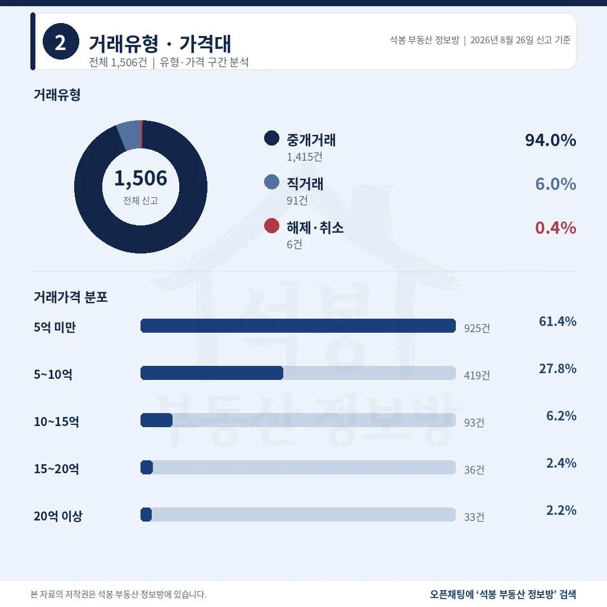
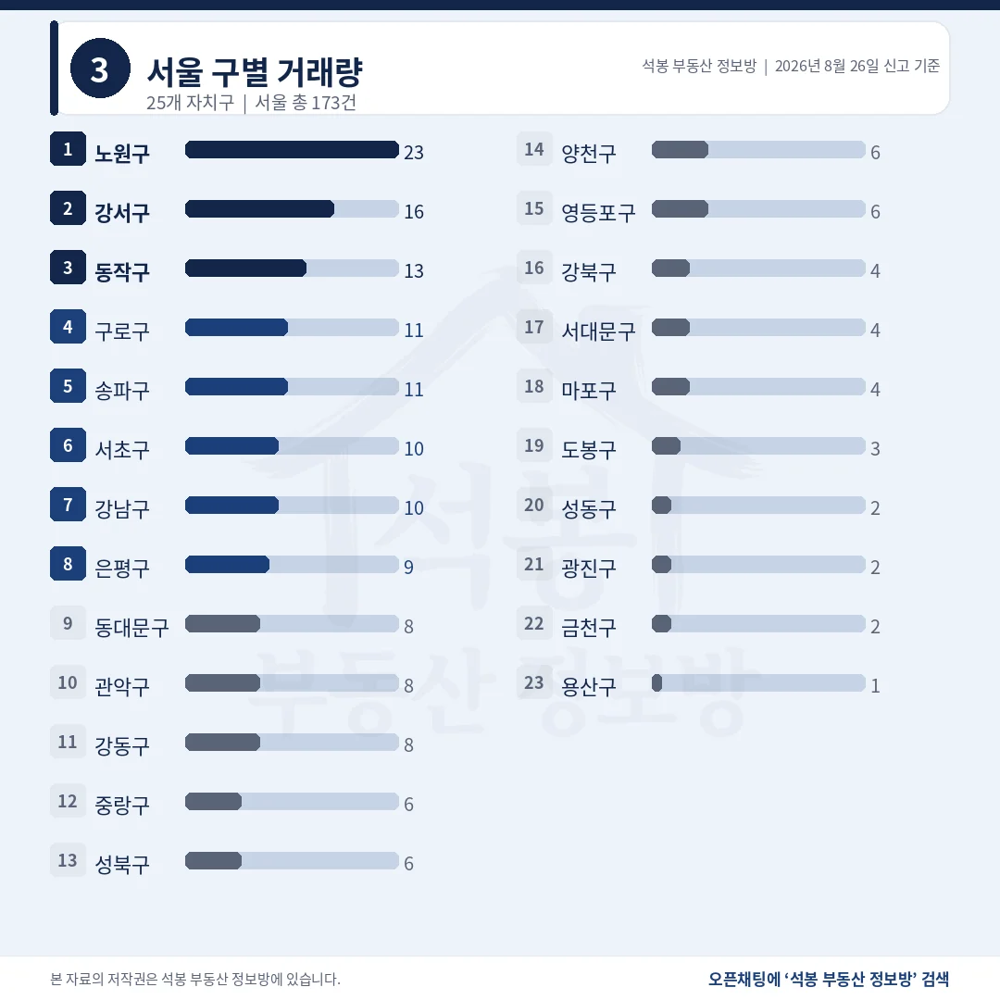
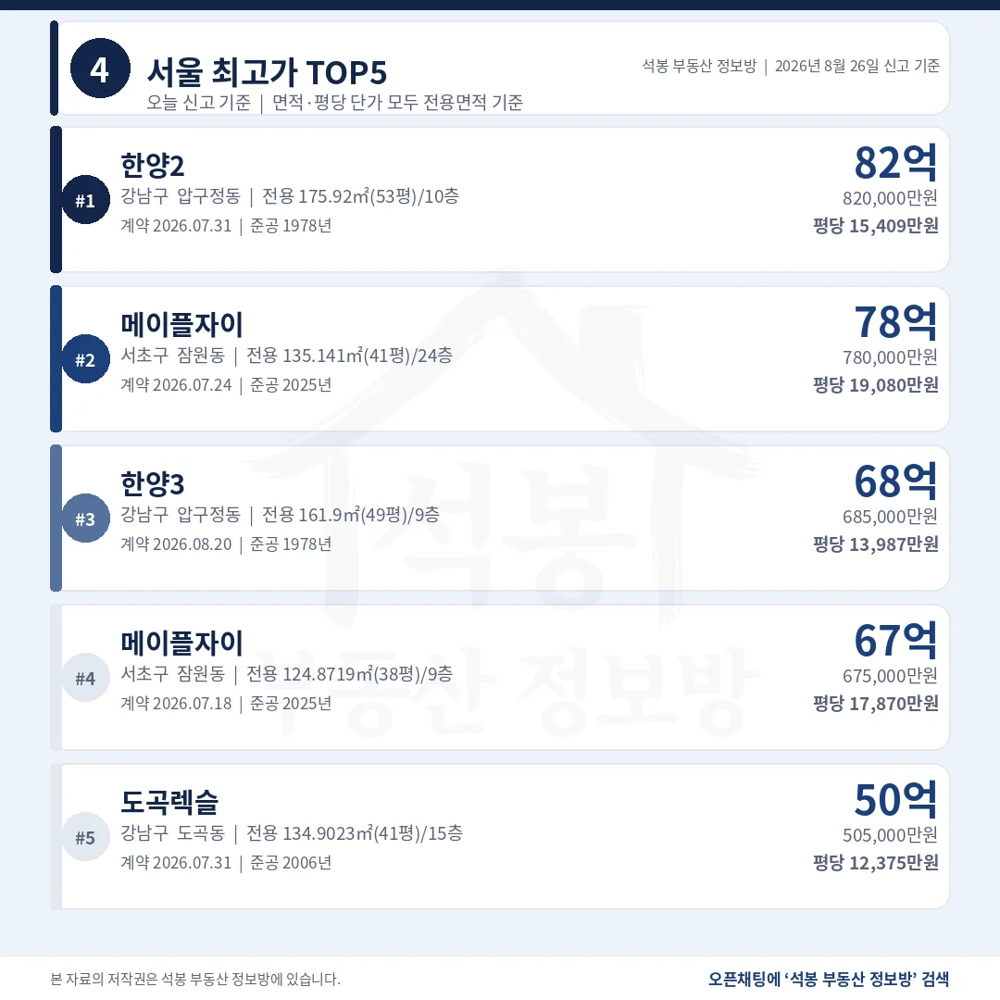
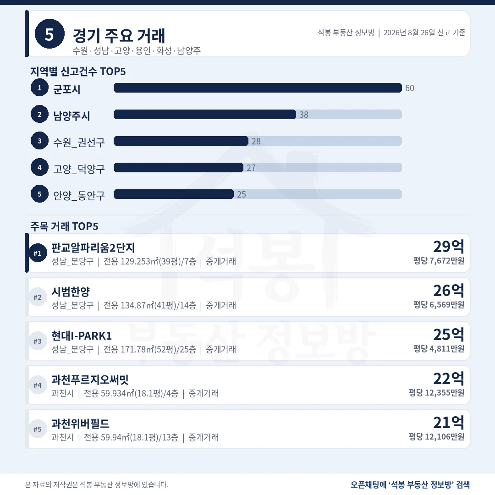
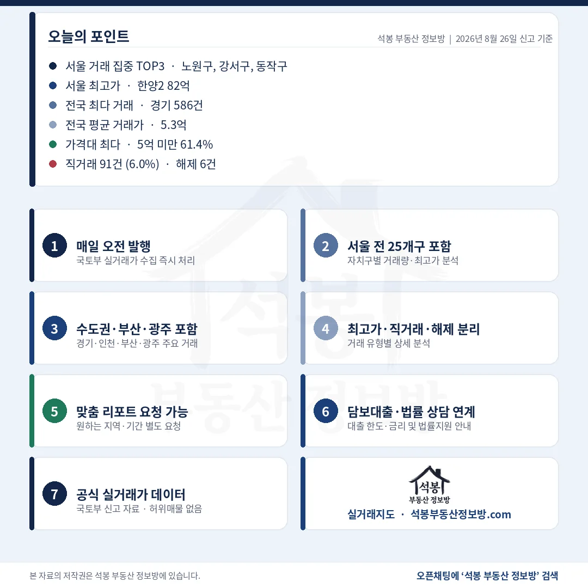

8월 26일 아파트 실거래 신고는 1,506건이었습니다. 주말에 밀렸던 신고가 8월 25일 하루에 몰렸다가, 이날은 평소 하루치 흐름으로 돌아왔습니다. 눈에 띄는 건 지역 구성입니다. 경기가 586건으로 전국의 38.9%를 가져간 반면 서울은 173건에 그쳤습니다. 값의 꼭대기는 압구정동과 잠원동이 나눠 가졌습니다.
단지명을 누르면 그 단지의 실거래 내역과 시세를 바로 볼 수 있습니다. (면적과 평당 단가는 모두 전용면적 기준)
1,506건 중 925건이 5억 아래입니다

거래유형·가격대
직거래는 91건 6.0%로, 10%를 넘겼던 8월 22일보다 내려왔습니다.
거래유형
건수
비중
중개거래
1,415건
94.0%
직거래
91건
6.0%
해제·취소
6건
0.4%
직거래 91건은 한 단지에 몰리지 않고 전국에 흩어졌습니다. 공공기관 일괄 매입 같은 벌크 신고는 없었습니다.
가격대
건수
비중
5억 미만
925건
61.4%
5~10억
419건
27.8%
10~15억
93건
6.2%
15~20억
36건
2.4%
20억 이상
33건
2.2%
해제·취소 6건을 뺀 1,500건의 평균은 5.3억, 중위는 3.9억입니다.
여기서부터는 회원에게 보여드립니다
카카오 로그인 3초면 전문을 읽을 수 있습니다. 무료입니다.
가입하시면 지역 시장조사 보고서(약식)를 2회 무료로 요청하실 수 있습니다.
이미 회원이면 같은 버튼으로 로그인만 됩니다
경기 586건, 전국의 38.9%를 가져갔습니다

서울 구별 거래량
최근 일주일 가운데 경기 비중이 가장 높았던 날입니다.
시도
신고
시도
신고
경기
586건
경남
77건
서울
173건
경북
66건
부산
92건
충북
61건
충남
81건
전북
54건
인천
79건
대구
46건
경기 586건은 군포 60건, 남양주 38건, 수원 권선구 28건 순이었습니다. 최다 지역인 군포도 한 단지 최다가 6건이라 특정 단지 쏠림은 없었습니다.
서울 자치구
신고
중위
비고
노원구
23건
6.70억
상계 9 · 공릉 8 · 월계 3 한 단지 최다 3건
강서구
16건
11.32억
화곡 5 · 등촌 3 · 마곡 2
동작구
13건
16.45억
상도 4 · 사당 4 · 노량진 2
구로구
11건
8.40억
구로 5 · 고척 3 · 개봉 2
송파구
11건
16.75억
가락 4 · 문정 3 · 풍납 2
강남구
10건
24.50억
20억 이상 7건
서초구
10건
22.90억
20억 이상 6건
서울 173건 전체 중위는 10.18억입니다. 노원 6.70억과 강남 24.50억이 같은 날 통계 안에 함께 있습니다.
압구정 한양2 82억, 1978년생이 서울 꼭대기

서울 최고가 TOP5
총액 1위와 평당 1위가 준공 47년 차이로 갈렸습니다.
단지
위치
거래가
전용면적
평당(전용)
1 한양2
강남 압구정동
82.0억
175.9㎡ (53.2평)
15,409만 1978년
2 메이플자이
서초 잠원동
78.0억
135.1㎡ (40.9평)
19,080만 2025년
3 한양3
강남 압구정동
68.5억
161.9㎡ (49.0평)
13,987만 1978년
4 메이플자이
서초 잠원동
67.5억
124.9㎡ (37.8평)
17,870만 2025년
5 도곡렉슬
강남 도곡동
50.5억
134.9㎡ (40.8평)
12,375만 2006년
총액은 한양2가 4.0억 높지만, 평당으로는 메이플자이가 23.8% 비쌉니다. 1978년 준공 단지의 값은 지금 사는 집이 아니라 재건축 뒤의 자리에 매겨진 것이라, 넓은 면적이 총액을 밀어 올리고 평당은 신축에 밀리는 구조가 나옵니다.
비수도권 20억은 대전 크로바 25억 하나뿐

경기/인천/부산/광주
건수는 부산 92건이 앞섰는데, 상단은 46건짜리 대전이 가져갔습니다.
지역
신고
최고가 단지
거래가
평당(전용)
경기
586건
성남 분당구 백현동 판교알파리움2단지
30.0억
7,672만
대전
46건
서구 둔산동 크로바
25.0억
5,010만
부산
92건
연제구 거제동 월드마크아시아드
14.75억
3,036만
울산
23건
남구 신정동 문수로2차IPARK1단지
11.90억
4,628만
대구
46건
수성구 범어동 궁전맨션
11.50억
3,488만
인천
79건
연수구 송도동 더샵엑스포9단지
9.45억
2,682만
광주
44건
서구 치평동 상무에스케이뷰
8.67억
2,493만
대전 46건의 중위는 2.69억인데 최고가는 크로바 전용 164.95㎡(49.9평) 25.0억으로 9.3배 벌어집니다. 경기 1위 판교알파리움2단지는 전용 129.3㎡(39.1평) 30.0억입니다.
20억 상단 33건, 서울 26건이 78.8%

구간
서울
경기
그 밖
20억 이상 33건
26건
6건
1건 (대전)
15억 이상 69건
52건
16건
1건 (대전)
20억을 넘긴 33건 가운데 32건, 그러니까 97.0%가 서울과 경기에서 나왔습니다. 서울 26건은 강남 7건, 서초 6건, 마포 3건 순이었고 경기 6건은 분당 3건에 과천 2건, 수원 영통구 1건이었습니다. 남은 한 건이 대전 둔산동입니다. 상단이 수도권에 몰리는 그림 자체는 새롭지 않지만, 비수도권에서 20억이 나온 자리가 부산도 대구도 아닌 대전이었다는 점은 기억해 둘 만합니다.
반대쪽 끝에는 군포가 있습니다. 60건으로 전국 시군구 가운데 가장 많았는데 중위는 4.50억, 최고가는 산본동 백합 8.40억이었습니다. 계약일이 8월 19일부터 22일까지 흩어져 있고 한 단지에 몰린 것도 6건이 최대라, 일괄 신고가 만들어 낸 숫자는 아닙니다. 신고가 가장 많은 곳과 값이 가장 높은 곳이 이렇게 멀어지는 날에는 건수 순위와 가격 순위를 따로 읽어야 합니다.
표 보는 법 · 직거래는 중개사를 끼지 않고 당사자끼리 한 거래입니다. 면적과 평당 단가는 모두 전용면적 기준이고, 평은 ㎡를 3.3058로 나눈 값입니다. 중위 거래가는 그 지역 거래를 금액순으로 줄 세웠을 때 한가운데 값이라 평균보다 체감에 가깝습니다. 건수와 비중은 해제·취소를 포함한 전체 신고 기준이고, 중위·평균은 해제·취소 6건을 뺀 1,500건으로 계산했습니다.
원자료: 국토교통부 실거래가 공개시스템 (2026년 8월 26일 신고분 기준) · 편집·제작: 석봉 부동산 정보방 · 신고분은 계약일과 신고일이 다를 수 있으며 해제·취소 건이 뒤늦게 반영될 수 있습니다 · 본 자료는 정보 제공 목적이며 투자 권유가 아닙니다.